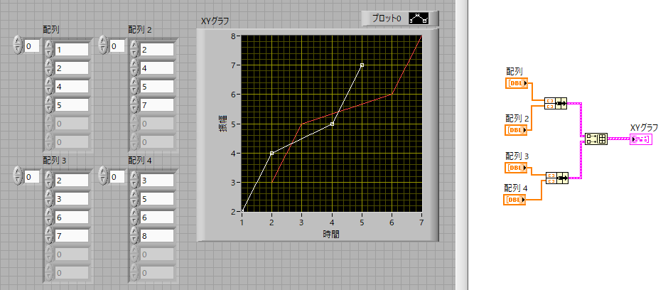

XYグラフ-02
波形グラフでも説明したように，複数のデータを一つのグラフに描くときに必要なアイコンは，
配列 → 配列連結追加
です．
配列ウィンドウの2行目，2列目にありますね．
配列連結追加アイコンを設置して，二つ目のデータを作成しましょう．
注意する点は，
XYデータをバンドルした後，連結する
ということです．

グラフのデザインは，波形グラフで説明したように，
プロット形式：グラフアイコン上で右クリックして変更 or フロントパネル右上の”プロット０”を右クリック
横軸，縦軸：軸の最大値，最小値をダブルクリックして変更（右クリックして自動スケールのチェックを外す）
です．